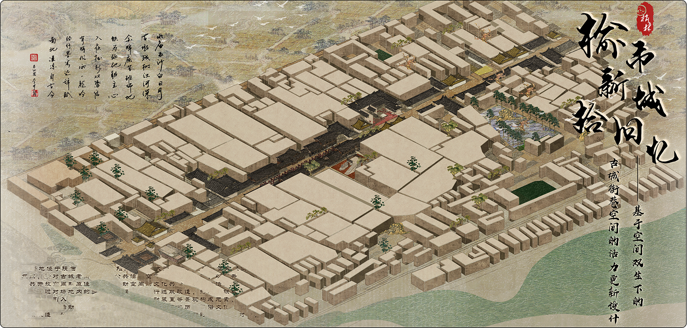
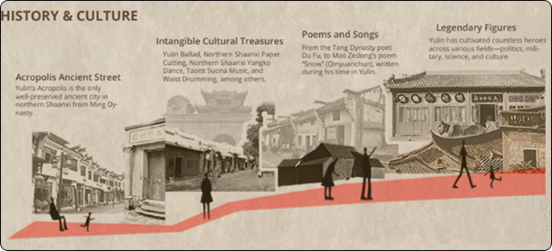
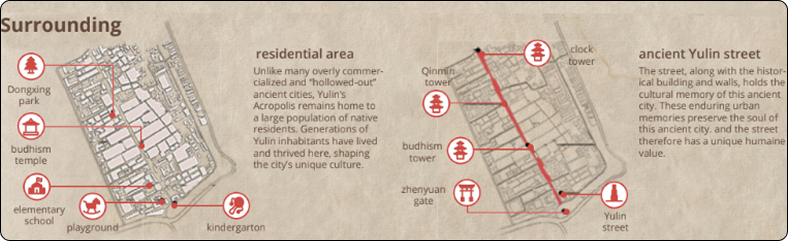
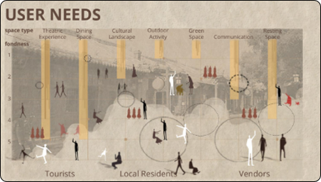
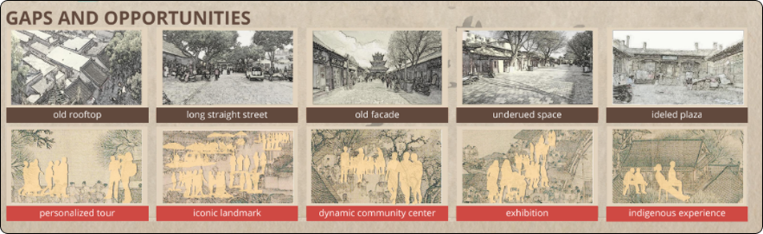
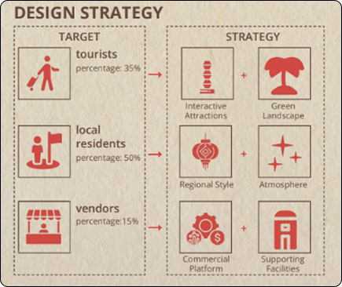
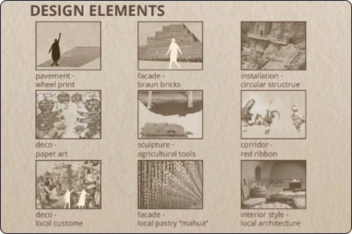

Yulin Dream
This is an urban street revitalization project. The street was once lively with rich culture history and landmarks. We take this renovation as an opportunity to: Create more space for diverse entertainment; Emphasize cultural heritage with architectural style.






Final Solution